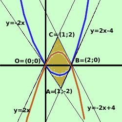

|
Dimostriamo che la figura individuata dalle 4 tangenti e' un rombo Possiamo seguire la definizione di rombo e quindi mostrare che i lati (che abbiamo gia' visto paralleli) sono uguali oppure potremmo anche mostrare che le diagonali sono tra loro perpendicolari: siccome il problema ci richiede di utilizzare la definizione seguiamo il primo metodo  Per semplicita' rinominiamo i punti di intersezione O A B C come da figura Troviamo i vertici del parallelogramma come punti di intersezione fra le tangenti; intanto conosciamo gia' 2 punti l'origine O=(0;0) ed il punto B=(2;0) in cui le parabole tagliano l'asse delle x Troviamo ora le coordinate del punto A all'incrocio delle tangenti y = -2x ed y = 2x -4 faccio il sistema y= 2x - 4 y = 2x - 4 y = 2x - 4 y = 2x - 4 y = 2(1) - 4 y = -2 quindi A=(1, -2) Troviamo quindi le coordinate del punto D all'incrocio delle tangenti y = 2x ed y = -2x + 4 faccio il sistema y= -2x - 4 2x = -2x - 4 2x + 2x = 4 4x = 4 x = 4/4 = 1 y = 2 quindi D=(1, 2) Calcoliamo ora le misure dei lati utilizzando la formula della distanza fra due punti Punti O=(0;0) A=(1;-2) B=(2;0) C=(1;2)
Sapendo che in un parallelogramma i lati opposti sono fra loro congruenti e' sufficiente quanto abbiamo fatto per dimostrare che si tratta di un rombo |